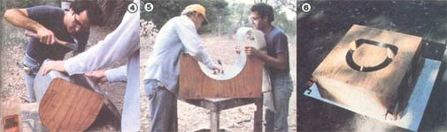

(PHOTOS BY BOB CHRISTENSEN)
[4] Alex finishes fastening a sheet-metal ""skin"" to the inner section of the mold. [5] Bob tacks more of the galvanized veneer to the upper half of the exterior form. [6] The completed casting frame prior to spooning in the Kast-Set. All the metal surfaces have been coated with oil or grease before the ""mud"" is laid in. . .